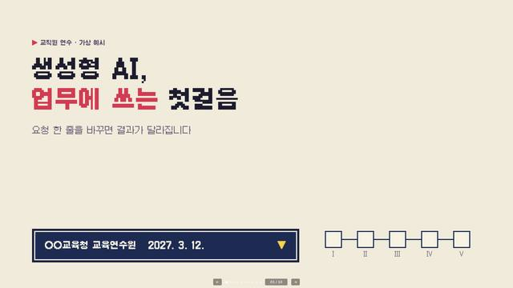
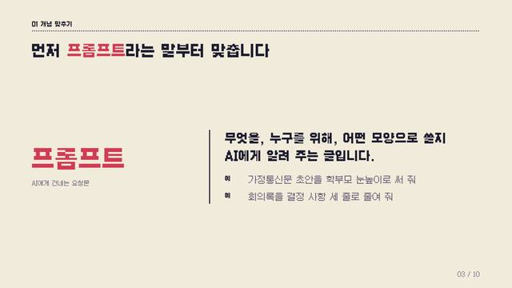
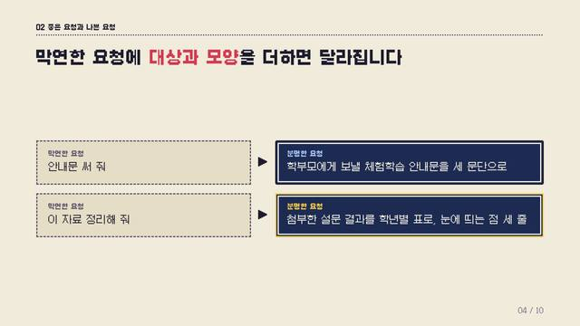
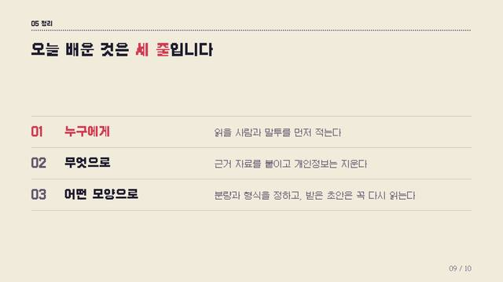
픽셀 게임
단계를 하나씩 깨 나가는 과정을 보여 줄 때. 참여를 끌어내는 연수 · 학생 행사
10장 세트 · 검증된 세트전체 장표 보기 →
발표자료 디자인을 고르고, AI에게 내 발표에 적용해 달라고 요청하는 곳입니다.




단계를 하나씩 깨 나가는 과정을 보여 줄 때. 참여를 끌어내는 연수 · 학생 행사


개념과 비교를 군더더기 없이 전할 때. 어떤 주제에도 무난하다
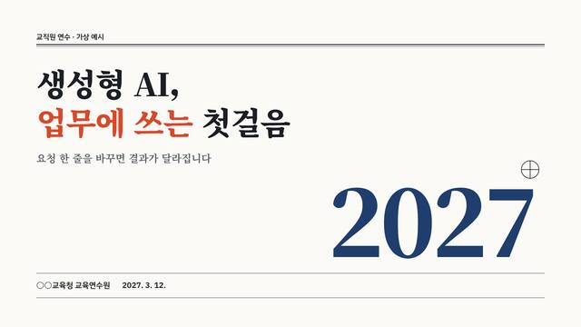
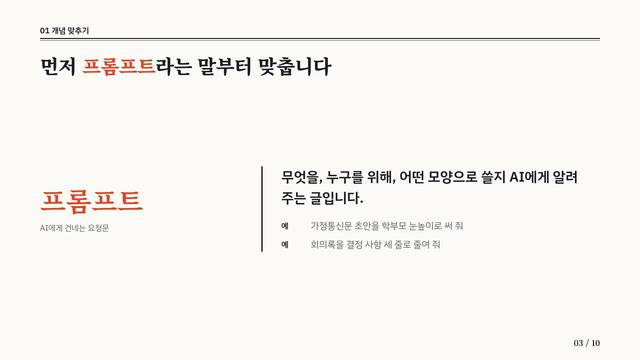
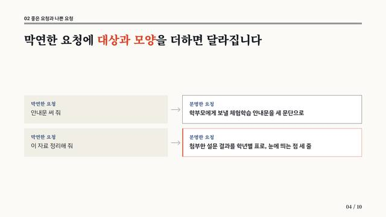
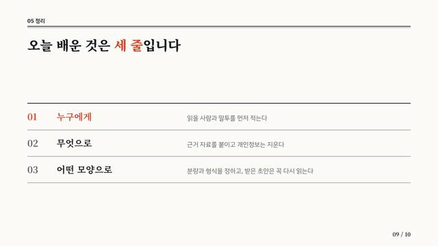
근거와 수치를 차분히 읽힐 때. 정책 · 계획 보고
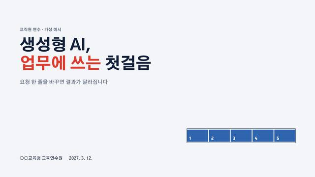
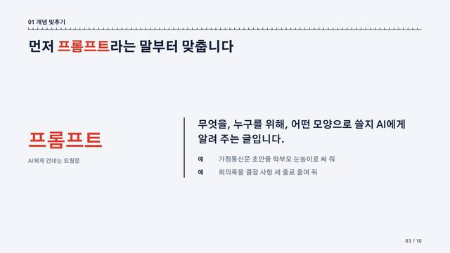
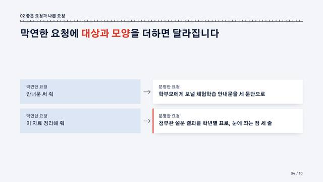
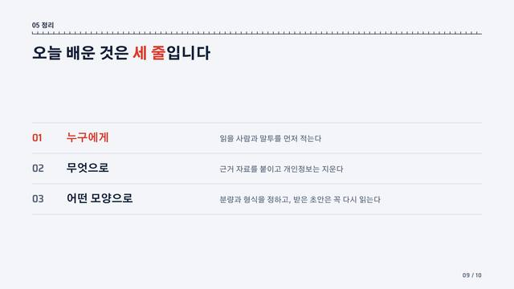
실적 · 순위 · 진행 상황을 중계하듯 보여 줄 때


역사 · 문화 · 지역을 다루는 격식 있는 자리
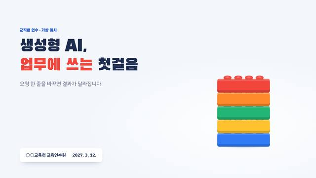
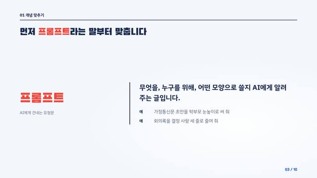
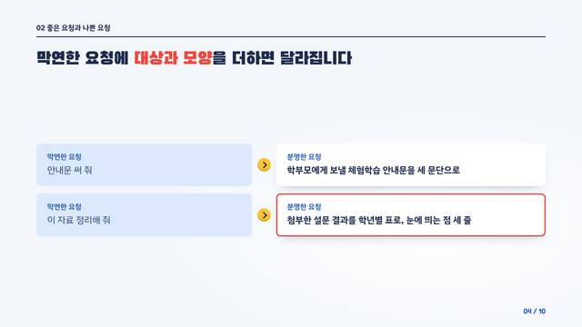
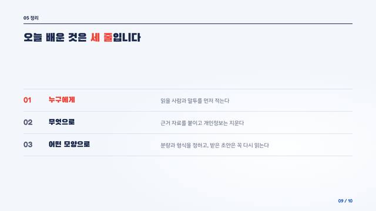
하나씩 쌓아 가는 과정을 밝게 전할 때. 유아 · 초등 대상 안내
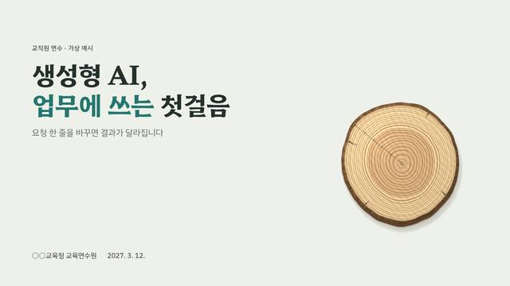
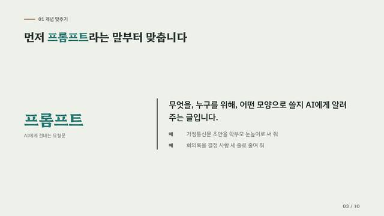
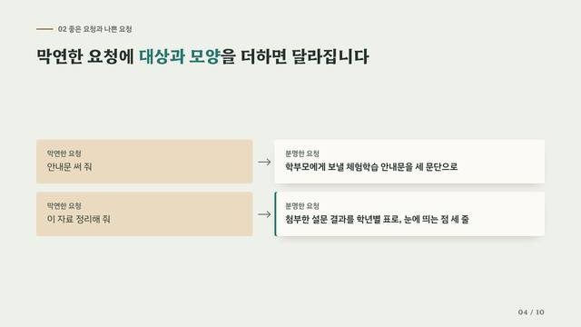
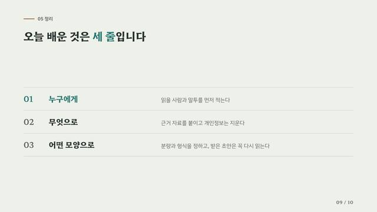
천천히 자라는 변화를 이야기할 때. 환경 · 생태 · 마을 교육
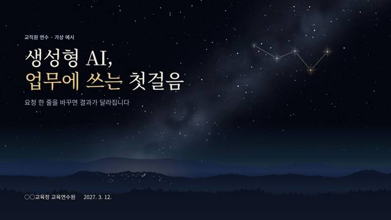
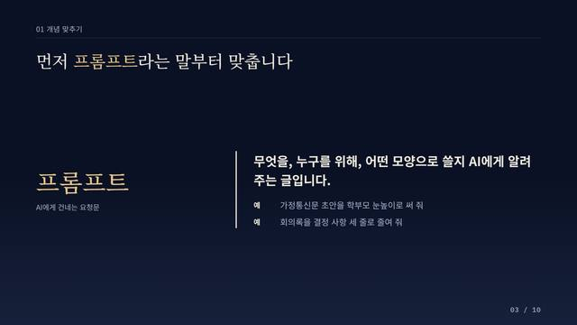
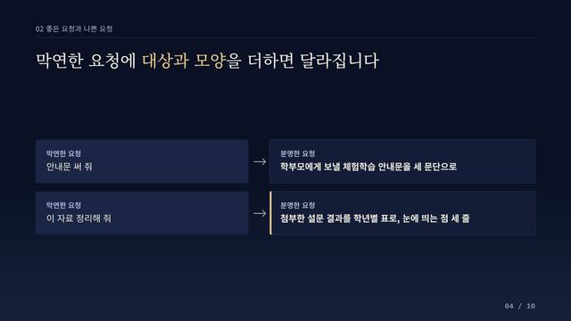
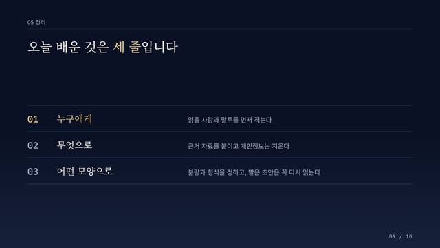
흩어진 것을 하나로 잇는 이야기. 비전 선포 · 불을 끄고 하는 발표
조건에 맞는 스타일이 없습니다. 검색어를 지우거나 다른 분위기를 골라 보세요.
누르면 표지 뒤에 색 · 글꼴만 맞춘 공용 본문을 붙여 넘겨 볼 수 있습니다. 완성된 발표 세트는 아닙니다.
 가온 야간편 탑승권 #4
가온 야간편 탑승권 #4표지만 있음 가까운 스타일: 인쇄·종이 에디토리얼
 블록 빌드 유아학교 #7
블록 빌드 유아학교 #7표지만 있음 가까운 스타일: 경쾌한 놀이 오브젝트
 늘봄 퀘스트 일지 #9
늘봄 퀘스트 일지 #9표지만 있음 가까운 스타일: 픽셀 게임
 안개 걷는 영토도 #10
안개 걷는 영토도 #10표지만 있음 가까운 스타일: 픽셀 게임
 디딤 타워 #11
디딤 타워 #11표지만 있음 가까운 스타일: 픽셀 게임
 협력 항로 해도 #12
협력 항로 해도 #12표지만 있음 가까운 스타일: 픽셀 게임
 두 개의 심 #17
두 개의 심 #17표지만 있음 가까운 스타일: 자연 재질
 함께 도는 궤도 #18
함께 도는 궤도 #18표지만 있음 가까운 스타일: 어두운 콘셉트
 화이트 단지 모형 #19
화이트 단지 모형 #19표지만 있음 가까운 스타일: 미니멀 스튜디오
 같은 사물, 아이의 눈 #24
같은 사물, 아이의 눈 #24표지만 있음 가까운 스타일: 경쾌한 놀이 오브젝트
 늘봄 수요 일기도 #25
늘봄 수요 일기도 #25표지만 있음 가까운 스타일: 관측·중계 인포그래픽
 손 닿는 구명튜브 #26
손 닿는 구명튜브 #26표지만 있음 가까운 스타일: 미니멀 스튜디오
 일요판 1면 약속 #27
일요판 1면 약속 #27표지만 있음 가까운 스타일: 인쇄·종이 에디토리얼
 기준음 A440 #28
기준음 A440 #28표지만 있음 가까운 스타일: 미니멀 스튜디오
 회전 레일 #29
회전 레일 #29표지만 있음 가까운 스타일: 경쾌한 놀이 오브젝트
 꺼지지 않는 창구 #30
꺼지지 않는 창구 #30표지만 있음 가까운 스타일: 어두운 콘셉트
 한 칸씩 켜지는 돔 #31
한 칸씩 켜지는 돔 #31표지만 있음 가까운 스타일: 관측·중계 인포그래픽
 재생지 콜라주 #32
재생지 콜라주 #32표지만 있음 가까운 스타일: 인쇄·종이 에디토리얼
 분광 프리즘 #37
분광 프리즘 #37표지만 있음 가까운 스타일: 미니멀 스튜디오
 전술 자석 보드 #39
전술 자석 보드 #39표지만 있음 가까운 스타일: 경쾌한 놀이 오브젝트
 처마 끝 수막새 #58
처마 끝 수막새 #58표지만 있음 가까운 스타일: 전통 공예·문양
 범 내려온다 #59
범 내려온다 #59표지만 있음 가까운 스타일: 경쾌한 놀이 오브젝트
 미래교육 설계도 #71
미래교육 설계도 #71표지만 있음 가까운 스타일: 관측·중계 인포그래픽
 별을 잇다 #74
별을 잇다 #74표지만 있음 가까운 스타일: 어두운 콘셉트
 익숙함에 틈을 내다 #96
익숙함에 틈을 내다 #96표지만 있음 가까운 스타일: 인쇄·종이 에디토리얼
 새로운 일상이 도착했습니다 #106
새로운 일상이 도착했습니다 #106표지만 있음
 피사체는 그대로, 시선은 새로 #109
피사체는 그대로, 시선은 새로 #109표지만 있음
제가 올린 발표 내용에 어울리는 디자인을 아래 갤러리에서 골라 적용해 주세요. 1. 목록 읽기: https://szxv7704-dot.github.io/design-reference-gallery/catalog.md 2. 제 발표의 내용과 자리(누구에게, 몇 분)를 보고 '검증된 세트' 중에서 스타일 하나를 고르고, 이유를 한 줄로 말해 주세요. 3. 고른 스타일의 적용 안내(목록에 적힌 주소)를 읽고, 10장 안팎의 발표 HTML 파일 하나로 만들어 주세요. 지킬 것: - 자료를 실제로 열어 읽은 뒤에 적용해 주세요. 주소를 열 수 없으면 읽은 척하지 말고 열 수 없다고 말해 주세요. - 먼저 장마다 "전하려는 것 · 고른 구성 · 제목"을 표로 보여 주고, 제가 확인하면 만들어 주세요. - 스타일은 하나만 쓰고, 장마다 내용에 맞는 구성을 고릅니다. 한 장에 구성 하나. - 예시에 들어 있는 기관명 · 수치 · 사례는 가상입니다. 제 발표에 가져오지 마세요. 제가 주지 않은 숫자를 지어내지 마세요. - 내용이 많으면 글자를 줄이지 말고 장을 나눠 주세요. 제 핵심 내용을 임의로 빼지 마세요.